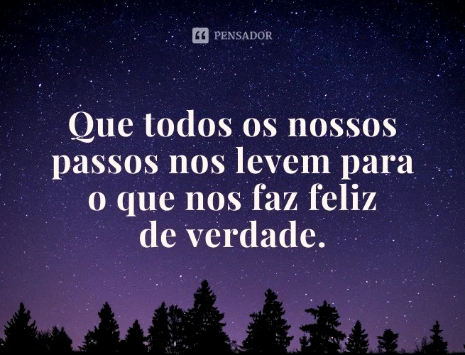

Combustível na vida da maioria das pessoas

Se expressarmos gratidão pelo que temos, teremos mais por que expressar gratidão!
Acorde todas as manhãs com um sorriso. Esta é mais uma oportunidade que você tem para ser feliz. Seja seu próprio motor de ignição. O dia de hoje jamais voltará .... Não o desperdice!!!
Agradeço todos os dias pela minha vida, por tudo o que conquistei até aqui. E tenho fé de que o futuro me reserva realizações ainda maiores!
Só tenho a agradecer a cada um dos desafios que me trouxeram até aqui, que me fizeram crescer e aprender tantas coisas!
É importante agradecer pelo hoje sem nunca desistir do amanhã!
A vida reserva surpresas maravilhosas para todos aqueles que cultivam a gratidão!
Importante parar e ter gratidão pelas vitórias
Quando nos sentimos afortunados, nossa resiliência alcança níveis superiores. Nossos padrões de comportamento se tornam mais saudáveis e nossas escolhas, mais sábias e generosas.
A gratidão desbloqueia a abundância da vida. Ela torna o que temos em suficiente, e mais. Ela torna a negação em aceitação, caos em ordem, confusão em claridade. Ela pode transformar uma refeição em um banquete, uma casa em um lar, um estranho em um amigo. A gratidão dá sentido ao nosso passado, traz paz para o hoje, e cria uma visão para o amanhã.
Tudo oque você precisa
Página002